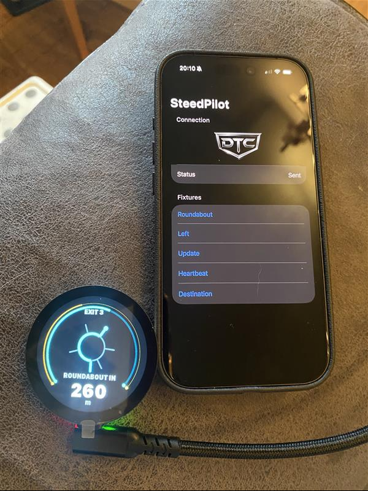
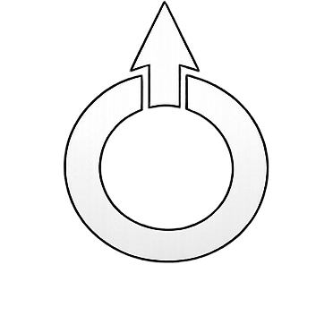

At 48 I decided to have a bit of a mid-life crisis and get myself a motorbike. Just a 125cc, but my Zontes C2 is a great bike and I'm enjoying being nervous and excited in nearly equal measures when I ride it.
I did miss having a sat nav though. You can certainly buy them, but I thought in this day of AI I'd try my hand at making my own. I enjoy making things and I have a 3D printer, and I'd leave Codex to do much of the iOS app side of things.
I wanted a device that is compact, bright, immediately readable and quiet until it has something important to say. A rider should be able to glance down, understand the next instruction and look back at the road (especially when they've only been riding a couple of months!).
SteedPilot is my attempt to build that device from an iPhone and an ESP32-S3 with a 360×360 circular screen.
The iPhone does the difficult thinking. The ESP32 concentrates on being a dependable display.

Two computers, one deliberately small job
The architecture is split in two.
The iPhone handles route planning, GPS, MapKit navigation state, speed limits, heading and route recalculation. It already has a good location system, a network connection and plenty of processing power.
The ESP32 receives a compact navigation state over Bluetooth Low Energy and renders it. It also owns local concerns such as touch, display brightness, battery state, movement detection and eventually wake/sleep behaviour.
This keeps the embedded side intentionally boring—in the complimentary engineering sense. It should not need to understand road networks or maintain a full map. If the phone says the next manoeuvre is the third exit at a roundabout in 178 metres, the device’s job is to present that clearly and reliably.
iPhone ESP32
MapKit · GPS · route planning ──BLE──▶ UI · sensors · powerDesigning for a glance
A circular display invites circular UI, but it is very easy to fill every edge with attractive but unreadable gauges.
SteedPilot uses the centre for the next manoeuvre and distance, leaving the edge for secondary information:
- A red warning ring can strengthen as the rider moves above the current speed limit.
- A route-progress arc grows as the journey advances.
- A manoeuvre-progress arc shrinks as the next instruction approaches.
- Roundabouts can show the target exit strongly while muting the others.
Long road sections need special treatment too. Showing “turn left in 18 miles” for half an hour is not especially useful, so the display can move into a “continue on this road” state until the next manoeuvre becomes relevant.
The end goal is not maximum information density. It is minimum interpretation time.

A protocol made from fixtures
The phone and device communicate using small JSON messages over BLE. A complete state message replaces the navigation state, an update patches only changed fields, and a heartbeat confirms that the app is still present.
{
"v": 1,
"type": "state",
"mode": "navigation",
"maneuver": "roundabout",
"distanceToManeuverMeters": 178
}Messages are chunked for BLE and terminated with a newline. The ESP32 buffers the chunks, parses the completed object and renders the result.
Keeping example messages as JSON fixtures gave the project a useful source of truth. The same fixture can drive the desktop simulator, regression tests and real hardware. A roundabout does not need to be rediscovered by riding repeatedly around Cambridge; it can be replayed at a desk until the UI is right.
What's next?
For now, SteedPilot has reached the important milestone: I'm able to plan a decent-length ride and get accurate (enough) direction feedback to help me get where I need to go.
The battery life is fairly poor, as I have to charge it once every day I want to use it. In time I'll add a larger capacity LIPO battery, and I'd like to be able to put the device in super-low-power mode - Something I think I can only do with a bit of re-wiring.
For now, I'm happy with the result!
Follow the build on GitHub.